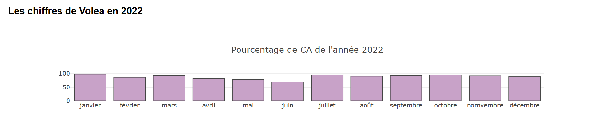

<div id="ajax-page" class="ajax-page-content">
    <div class="ajax-page-wrapper">
        <div class="ajax-page-nav">
            <div class="nav-item ajax-page-prev-next">
                <a class="ajax-page-load" href="portfolio-3.html"><i class="pe-7s-icon pe-7s-angle-left"></i></a>
                <a class="ajax-page-load" href="portfolio-5.html"><i class="pe-7s-icon pe-7s-angle-right"></i></a>
            </div>
            <div class="nav-item ajax-page-close-button">
                <a id="ajax-page-close-button" href="#"><i class="pe-7s-icon pe-7s-close"></i></a>
            </div>
        </div>

        <div class="ajax-page-title">
            <h1>Visualisation de Données - Chart.js & Plotly.js</h1>
        </div>

        <div class="row">
            <div class="col-sm-12 col-md-8 portfolio-block">
                <!-- Carousel des captures d'écran -->
                <div class="owl-carousel portfolio-page-carousel">
                    <div class="item">
                        
                    </div>
                    <div class="item">
                        
                    </div>
                </div>

                <!-- Graphiques interactifs -->
                <div class="portfolio-page-video" style="position: relative; padding-bottom: 70%; height: 0; overflow: hidden; min-height: 600px; margin-top: 20px;">
                <iframe class="embed-responsive-item" src="0/4- chart js et plotly js/index.html" title="Visualisation de Données" style="position: absolute; top: 0; left: 0; width: 100%; height: 100%; border: none;"></iframe>
                </div>


                <script type="text/javascript">
                    function customAjaxScroll() {
                        var windowWidth = $(window).width();
                        if (windowWidth > 991) {
                            // Scroll personnalisé pour la page Ajax
                            $("#ajax-page").mCustomScrollbar({
                                scrollInertia: 8,
                                documentTouchScroll: false
                            });
                        } else {
                            $("#ajax-page").mCustomScrollbar('destroy');
                        }
                    }

                    jQuery(document).ready(function($){

                        // Scroll de la page chargée en Ajax
                        customAjaxScroll();


                        $('.portfolio-page-carousel').owlCarousel({
                            smartSpeed:1200,
                            items: 1,
                            loop: true,
                            dots: true,
                            nav: true,
                            navText: false,
                            margin: 10
                        });

                    });

                    jQuery(window).on('resize', function() {
                        customAjaxScroll();
                    });
                </script>
            </div>

            <div class="col-sm-12 col-md-4 portfolio-block">
                <!-- Description du projet -->
                <div class="block-title">
                    <h3>Description</h3>
                </div>
                <ul class="project-general-info">
                    <li><p><i class="fa fa-user"></i> David D'AMORE</p></li>
                    <li><p><i class="fa fa-globe"></i> <a href="https://github.com/davistres" target="_blank">github.com/davistres</a></p></li>
                    <li><p><i class="fa fa-calendar"></i> 2024</p></li>
                </ul>

                <p class="text-justify">Exercice de visualisation de données utilisant deux bibliothèques JavaScript populaires : Chart.js et Plotly.js. Ce projet démontre ma capacité à transformer des données brutes en graphiques interactifs et visuellement attrayants. Les graphiques incluent différents types de visualisations (barres, lignes, camemberts) avec des interactions utilisateur en temps réel.</p>


                <!-- Technologies -->
                <div class="tags-block">
                    <div class="block-title">
                        <h3>Technologie</h3>
                    </div>
                    <ul class="tags">
                        <li><a>JavaScript</a></li>
                        <li><a>Chart.js</a></li>
                        <li><a>Plotly.js</a></li>
                        <li><a>Data Visualization</a></li>
                    </ul>
                </div>


                <!-- Boutons de partage -->
                <div class="btn-group share-buttons">
                    <div class="block-title">
                        <h3>Partage</h3>
                    </div>
                    <a href="https://www.linkedin.com/in/david-d-amore-362307107/" target="_blank" class="btn"><i class="fa fa-linkedin"></i> </a>
                    <a href="https://github.com/davistres" target="_blank" class="btn"><i class="fa fa-github"></i> </a>
                </div>
            </div>
        </div>
    </div>
</div>
